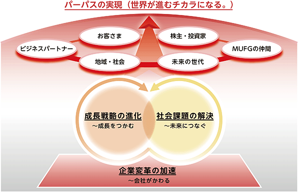
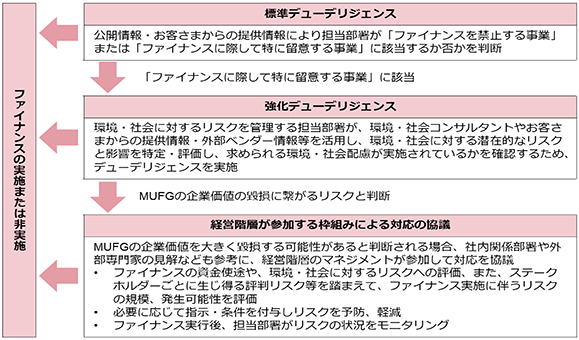

文中の将来に関する事項は、当連結会計年度末現在において、当社グループが判断したものであります。
わが国は少子高齢化や人口減少等の構造的課題を抱え、世界的にも低成長が常態化しつつあります。また、約3年間にわたるコロナ禍を経て、ＡＩを始めとしたデジタル技術の発展と日常への浸透、クリーンエネルギーを中心とした社会・経済構造への転換、人々の働き方や価値観の多様化といったメガトレンドは加速しています。加えて、地政学リスクやグローバル化の揺り戻しといった「分断」の顕在化、円金利の上昇等、当社を取り巻く経営環境は大きく変化しています。加えて、米国新政権がマクロ経済や金融市場に与える影響を見極める必要があります。
当社は、こうした状況を正しく読み解いたうえで、当社の広範なネットワークや多様なソリューションが持つ「つなぐ」機能を最大限発揮し、新しい時代において社会をリードする存在でありたいと考えています。昨年度からの3年間を対象とした今中期経営計画を、当社を取り巻く経営環境が大きく変わる機会を捉えて「成長」を取りにいく3年間と位置付け、その結果として収益力向上やＲＯＥの改善、そして当社のパーパスである「世界が進むチカラになる。」を実現することを通じて、お客さま・株主・社員を始めとする全てのステークホルダーの期待に応えてまいります。
今中期経営計画では、前中期経営計画における取り組みを発展させ、成長戦略を進化させながら、社会課題解決への貢献にも取り組み、それらを支える企業変革を加速させてまいります。
地政学リスクやグローバル化の揺り戻しといった分断が顕在化する時代において、当社の広範なネットワークや多様なソリューションが持つ「つなぐ」機能を最大限発揮することで、経済的価値のみならず社会的価値も追求し、パーパス(世界が進むチカラになる。)の実現をめざします。

当連結会計年度の金融経済環境でありますが、世界経済は、インフレ鎮静化と所得改善の流れが維持されたほか、欧米を中心とする各国の中央銀行がこれまでの金融引き締め局面から利下げ方向に転じ、慎重に金融緩和を進めてきたことにも支えられ、全体としては緩やかな成長を続けました。もっとも、米国新政権による各種の政策運営に起因する不透明感が年度終盤にかけて高まったほか、長期化するウクライナ紛争や中東問題等の地政学情勢、主要国の拡張的な財政政策といった実体経済への影響を見定めることの難しい出来事も多く、不確実性の高い状況が続きました。わが国では、物価高が消費の重石となったものの、堅調な企業業績や人手不足等を背景に賃上げの機運が着実に高まったほか、脱炭素やデジタル化に向けた投資拡大にも支えられ、景気は緩やかな回復を続けました。
金融情勢に目を転じますと、株価は、全体としては底堅く推移しましたが、2024年度半ば頃の米国経済の下振れ懸念や、年度終盤にかけての米国新政権の政策運営等に起因する不透明感の高まりを受けて調整する局面がみられました。金利については、欧米では、中央銀行の金融政策が利下げ方向に転じる中、2024年度前半に市中金利は低下しましたが、各国政府の拡張的な財政政策への思惑などから2024年度後半にかけて上昇基調で推移しました。わが国では、短期金利は、日本銀行による2024年7月と2025年1月の利上げに伴い上昇しました。長期金利は、日本銀行による漸進的な利上げと国債買入額の段階的な減額の下で、上昇基調で推移しました。ドル円相場は、日米の金融政策の方向性の違い等が意識され、2024年9月には140円台まで円高が進行しました。その後は日米の中央銀行による慎重な金融政策運営や米国長期金利の上昇等により、2024年度後半にかけては振れを伴いながらも総じて円安基調で推移しました。
今中期経営計画を「成長」を取りにいく3年間とするために、中期経営計画の3本柱のうち、「成長戦略の進化」と「企業変革の加速」において、7+4の主要戦略を策定いたしました。
「成長戦略の進化」は、国内ではリテール顧客基盤の強化によりLife Time Valueの最大化を図るとともに、法人×ＷＭビジネスモデルを通じて承継ビジネスを強化いたします。海外では、ＧＣＩＢ・市場一体ビジネスモデルの進化による収益力向上、Partner Bankとの連携強化によるアジア成長の取り込みに取り組んでまいります。加えて、資産運用立国実現への貢献に向けた取り組みやＧＸ起点でのバリューチェーン支援を通じて経済的価値・社会的価値の双方を追求するとともに、中長期的な成長に向けて新たな事業ポートフォリオ構築にも挑戦していきます。
「企業変革の加速」は、リスク管理やコンプライアンスの更なる向上に努めつつ、スピード改革を始めとするカルチャー改革の加速や、人的資本の拡充、システム開発リソースの増強、ＡＩ・データ基盤の強化といった経営基盤の強化に取り組んでまいります。
なお、中期経営計画の3本柱の残る「社会課題の解決」については、本有価証券報告書の「２ サステナビリティに関する考え方及び取組 (2)戦略」をご参照下さい 。
当社グループは、お客さま、社員、株主等、ステークホルダーの安全確保を最優先とし、社会機能の維持に不可欠な金融インフラとして、事業者の資金繰り支援等の施策を通じ、お客さま・社員・株主をはじめとする全てのステークホルダーの皆さまの期待に応えてまいります。
(A) 成長戦略の進化
(B) 企業変革の加速
財務目標は、2024年度に、中長期的にめざす水準である「ＲＯＥ：9～10％」に到達したことから、見直しを実施し、新たに中長期ＲＯＥ(東証定義)：12％程度の目標を設定しました。中期経営計画の最終年度である2026年度の財務目標については、足元で外部環境の不確実性が増していることから、水準の見直しについてあらためて精査しています。事業環境の見通しが現時点の想定程度であれば、2026年度は親会社株主純利益で2兆円以上、ＲＯＥ(東証定義)で10％以上と、これまで通り着実な成長を続けることを想定していますが、まずは2025年度に集中し、引き続きＲＯＥ重視の経営は継続した上で、各種取り組みを推進します。(2025年5月公表)。
文中の将来に関する事項は、当連結会計年度末現在において、当社グループが判断したものであります。
サステナビリティに関する課題は、取締役会の監督のもと、経営会議がその傘下に様々な委員会を設置して管理しています。サステナビリティ委員会は、経営会議傘下の委員会で、Chief Sustainability Officerが委員長を務めています。サステナビリティ委員会ではサステナビリティに関するリスクや機会を含めたサステナビリティに関する課題への取り組み方針を定期的に審議するとともに、ＭＵＦＧグループの取り組みの進捗状況をモニタリングしています。サステナビリティ委員会は、経営会議へ報告を行い、必要に応じて取締役会へも報告を行っています。
業務執行の意思決定機関として経営会議を設置し、取締役会の決定した基本方針に基づき、経営に関する全般的重要事項を協議決定しています。
取締役会は、事業戦略、リスク管理、財務監視に沿って、サステナビリティに関する事項の管理を監督します。監督は、ＰＤＣＡサイクルに基づいて行われます。取締役会は、気候変動を含むサステナビリティに関連する事項を最優先事項と位置づけ、年次計画に基づき定期的に、又は必要に応じて、議論・審議を行っています。
ＭＵＦＧのサステナビリティへの幅広い取り組みを客観的に評価する観点から、株式報酬の業績連動係数に「ＥＳＧ評価」の指標を設けています。主要ＥＳＧ評価機関5社(CDP、FTSE、MSCI、S&PDJ、Sustainalytics)による外部評価の改善度(相対評価)に加え、サステナビリティ経営のさらなる進化を後押しするため、グループ・グローバルＧＨＧ自社排出量の削減、従業員エンゲージメントサーベイスコアの改善並びに女性マネジメント比率の向上をＥＳＧ独自評価指標として設定しています。
② 気候変動
ＭＵＦＧでは、持続可能な社会の実現に貢献するため、優先的に取り組む課題の一つに「カーボンニュートラル社会の実現」を掲げています。
ＭＵＦＧは、ＧＦＡＮＺ(Glasgow Financial Alliance for Net Zero)をはじめとする、気候変動に対処するための様々なイニシアティブに参画しています。また、気候関連財務情報開示タスクフォース(Task Force on Climate-related Financial Disclosures：ＴＣＦＤ)の提言を支持しています。
グループ・グローバルベースでのプロジェクトチームであるカーボンニュートラル推進ＰＴを設置し、各取り組みについては、グループＣＥＯをはじめとする主要なマネジメントが参加するステアリングコミッティで議論するほか、サステナビリティ委員会で審議しています。
ＭＵＦＧでは、気候変動に関するリスクをトップリスクと位置づけており、経営会議傘下の委員会である投融資委員会、与信委員会、リスク管理委員会において、それぞれの専門性を踏まえた検討を行っています。これらの各委員会の審議内容は、経営会議へ報告しています。
また、取締役会傘下委員会であるリスク委員会においても気候変動を含むグループ全体のリスク管理に関する事項及びトップリスクに関する事項について審議・報告を行っています。
③ 人的資本
人事に係る基本方針や重要戦略は、グループＣＥＯやグループＣＨＲＯをはじめとする主要なマネジメントが参加する人事運営会議やサステナビリティ委員会で審議しています。ＭＵＦＧグループ各社においては、ＭＵＦＧで決定された基本方針や重要戦略に基づき、各社の人事担当役員のもと、具体的な人事施策や取り組みの検討がなされています。
また、各取り組みの進捗状況等については、取締役会による監督に基づき、人事運営会議、サステナビリティ委員会や経営会議等を通じて報告・審議・決議を実施しております。人材の流出・喪失等や士気の低下等により損失を被るリスク及びこれに類するリスク(人材リスク)を管理するためのガバナンスについては、「(3) リスク管理 ③人的資本」を参照してください。
ガバナンス体制の詳細については、
(2) 戦略
① サステナビリティ
ＭＵＦＧは、社会課題解決への貢献を経営戦略と一体化させ、これを中計の3本柱の1つと位置づけ、取り組みを一層強化していきます。持続可能な環境・社会の実現に向け、サステナビリティ経営において優先的に取り組む課題(以下、優先課題)を特定しています。
優先課題の特定にあたっては、サステナビリティ開示基準、ＥＳＧ評価機関の評価項目、投資家の期待等、ステークホルダーにおける重要性と、機会とリスクを踏まえたＭＵＦＧの事業における重要性を考慮しています。これらの二つの重要性を踏まえて、社外アドバイザーや投資家、社員等の意見も取り入れ、優先課題の特定を行いました。
主な取り組みについては、経営計画委員会やサステナビリティ委員会でモニタリングを行います。
② 気候変動
「カーボンニュートラル社会の実現」への取り組みは経営の最重要課題の一つであり、リスク管理とビジネス機会の両面から対応しています。
ＭＵＦＧは、ＴＣＦＤの提言を踏まえ、金融機関としての気候変動関連のリスクを二つのカテゴリーに分類し、取り組みを進めています。一つは、異常な暴風雨や洪水などの悪天候事象の深刻化や頻度の増加、気温や海面水位の上昇、降水量や降水分布の変化などの気候パターンの長期的な変化などによる物理的損害から生じるリスクであり、「物理的リスク」と分類されます。もう一つは、脱炭素社会への移行に関連して生じるリスクで、これは規制、市場の選好、技術の変化などから発生するもので、「移行リスク」と分類されます。
ＭＵＦＧは、地球温暖化問題に取り組むグローバル金融機関としての責任を認識し、お客さまに提供する商品・サービスや、事業活動に伴う環境負荷を低減するための施策を通じて、脱炭素社会への移行に向けた取り組みを支援していきます。
③ 人的資本
人的資本経営のめざす姿と考えている「社員一人ひとりが活き活きと活躍し、社会・お客さまに貢献するグローバル金融グループ」の実現には、最重要資本の一つである人的資本の拡充が必要と考えています。価値創造の源泉である社員のウェルビーイング(幸せ)を高め、個人・組織の持続的な成長を促し、世界が進むチカラになるよう、人的資本経営に取り組んでいます。
(ⅰ) 人材育成方針
ＭＵＦＧでは、MUFG Wayに相応しい人的資本経営を実現するための基本的な考え方として「ＭＵＦＧ人事プリンシプル」を策定しています。
人材育成に関しては、「社員一人ひとりが知識や専門性のみならず、見識や倫理観を高められる教育機会を提供し、社員の自律的キャリア形成を支援すると同時に、MUFG Wayを体現できる多様なプロフェッショナル人材を育成すること」を基本理念としています。
社会やお客さまの期待を超える価値を提供するため、経営・事業戦略と人事戦略の同期を加速し、社員一人ひとりがスキル・専門性を高めることを促進していきます。
(ⅱ) 社内環境整備方針
ＭＵＦＧのパーパスである「世界が進むチカラになる。」の実現に向けて、「人的資本重視の経営」をサステナビリティ経営において優先的に取り組む課題(優先課題)として取り組みを進めています。信頼のグローバル金融グループとして、その特徴を最大限活かし、社員一人ひとりが活き活きと活躍できる職場環境を提供します。また、健康経営とＤＥＩ(ダイバーシティ・エクイティ＆インクルージョン)の浸透を通じて社員が最大限の能力を発揮することを支援するとともに、全世界の社員がプロフェッショナルとして成長、活躍できる職場環境を提供することで、社員のウェルビーイング、即ち中長期な人生の充実を実現します。
人材を惹きつけ、社員が持てる力を最大限発揮するための人事制度を構築するとともに、他社比競争力のある処遇を提供しています。三菱ＵＦＪ銀行、三菱ＵＦＪ信託銀行及び三菱ＵＦＪモルガン・スタンレー証券の3社において一定の要件を満たす管理職に対してインセンティブプランとして株式交付制度を導入しています。また、社員の人権を尊重するとともに、事業を展開する各国・地域の法令遵守、労働環境、労働時間の定期的なモニタリング及び改善、財産形成貯蓄制度、企業年金、持株会等を通じた社員の安定的な資産形成、Financial Wellnessの向上を通じて、社員の心身の健康促進・私生活の充実に取り組んでいます。
(3) リスク管理
① サステナビリティ
「ＭＵＦＧ環境方針」、「ＭＵＦＧ人権方針」のもと、ファイナンス(※)において、環境・社会に係るリスクを管理する枠組みとして、「ＭＵＦＧ環境・社会ポリシーフレームワーク」を制定しています。環境・社会への影響が懸念される特定のセクターについては、ファイナンスにおけるポリシーを定めるとともに、ファイナンスの対象となる事業の環境・社会に対するリスク又は影響を特定し、評価するためのデューデリジェンスのプロセスを導入しています。
※ＭＵＦＧの主要子会社である銀行、信託及び三菱ＵＦＪ証券ホールディングスの法人のお客さま向けの与信及び債券・株式引受を指します。
ＭＵＦＧがファイナンスの対象とする事業の環境・社会に対するリスクの特定・評価は、お客さまと直接接点を持つ部署が「標準デューデリジェンス」を行います。これにより、対象事業が特に留意が必要と判断された場合、「強化デューデリジェンス」を実施し、ファイナンスの実行の可否を決定します。
対象事業の環境・社会に対するリスクが重大であり、ＭＵＦＧの企業価値の毀損に繋がりうる、評判リスクに発展する可能性がある事業については経営階層が参加する枠組みにおいて対応の協議を行っています。また、銀行では大規模なプロジェクトによる環境・社会に対するリスクと影響を特定、評価、管理するための枠組みである赤道原則を採択し、ガイドラインに沿ったリスクアセスメントを行っています。
環境・社会にかかる機会及びリスクへの対応方針・取り組み状況は、テーマに応じてリスク管理委員会や投融資委員会、与信委員会においても審議・報告を行っています。各委員会の審議内容は経営会議への報告後、取締役会において報告・審議され、取締役会が環境・社会課題に関するリスクを監督する態勢としています。
＜ファイナンス対象事業の環境・社会に対するリスク又は影響を特定・評価するプロセス＞

※本プロセスは、各地の法令遵守のもとで適用されます。
② 気候変動
気候変動に関するリスクへの対応の強化に向けて、グループ全体の視点で、気候変動に関するリスクとその潜在的なポートフォリオ、事業、財務への影響をより的確に把握、測定、低減することを目的として、リスク管理枠組みに統合しています。ＭＵＦＧのリスク管理フレームワークは、物理的リスクと移行リスクに対処することを意図しています。
前述の「ＭＵＦＧ環境・社会ポリシーフレームワーク」では、石炭火力発電や鉱業(石炭)、石油・ガス等、気候変動への影響が懸念される特定のセクターについては、ファイナンスにおけるポリシーを定めるとともに、ファイナンスの対象となる事業の環境・社会に対するリスク又は影響を特定し、評価するためのデューデリジェンスのプロセスを導入しています。
気候変動に関するリスクについては、
③ 人的資本
ＭＵＦＧでは、人材リスクをオペレーショナルリスクの一つとして定義の上、管理しております。人材リスクを含む各種オペレーショナルリスクについては、それぞれリスク評価を実施し、リスク委員会やリスク管理委員会、経営会議において、報告・審議を行っております。
リスク管理体制の詳細については、
(4) 指標と目標
① サステナビリティ
ＭＵＦＧは、環境・社会課題の解決に向けた具体的な指標・目標を設定し、モニタリングしています。サステナブルファイナンスについては、2019年度から2030年度までのサステナブルファイナンス累計実行額目標を100兆円に設定しており、2024年度までの累計実行額は43.5兆円(概算値)です。
② 気候変動
ＭＵＦＧでは、2021年5月に「ＭＵＦＧカーボンニュートラル宣言」を公表し、2050年末までに投融資ポートフォリオの温室効果ガス排出量をネットゼロに、2030年度末までに当社自らの温室効果ガス排出量をネットゼロにするという目標を発表しました。これらの目標は、パリ協定の合意事項を支持するとともに、ＭＵＦＧグループにとって気候変動に関連するリスクと機会を最優先課題として認識していることを示しています。
投融資ポートフォリオの温室効果ガス排出量ネットゼロの実現のために、各セクターやＭＵＦＧのポートフォリオの特性も踏まえて、以下のように中間目標の設定を行っています。当連結会計年度より、債券・株式・シンジケートローンの引受からの排出(Facilitated Emission)の大部分を占める電力、石油・ガスセクターについては、目標の計測対象にFacilitated Emissionを追加しました。
＜各セクターの中間目標、実績＞
*1 目標の計測対象にFacilitated Emissionを含む
*2 不動産建物別・年度別係数のデータは、2022年度データを使用
*3 船舶に関する投融資ポートフォリオ全体での要求水準との差分を示す整合度指標。ファイナンス提供をしている個々の船舶の気候変動整合度(VCA)を融資ポートフォリオ上の割合で加重平均して算出。2022年度からポセイドン原則により要求水準が引き上げられ、MinimumとStrivingの二つの新基準に変更。両方とも2050年ネットゼロをめざす基準だが、2030年と2040年時点の削減目安が異なる。Minimum基準は2008年比で2030年までに排出量を最低20%削減、2040年までに最低70%削減。Striving基準は2008年比で2030年までに排出量を30%削減、2040年までに80%削減
*4 RPK：Revenue Passenger Kilometers(有償旅客キロ)のことで、有償旅客数に輸送距離を乗じて算出した航空会社の旅客輸送実績を示す指標
*5 発電事業用の一般炭採掘を主たる事業とする事業者への法人融資額(含むコミットメント未使用額)を対象。ただし、脱炭素社会への移行に向けた取り組みに資する案件は除外
③ 人的資本
ＭＵＦＧでは、めざす姿の実現に向けて重点課題を定め、それぞれに対応する人的資本ＫＰＩを設定、目標を開示し、各種施策に取り組んでいます。特に、ＤＥＩや社員のウェルビーイングについて設定している目標に対する進捗は以下のとおりです。
(ⅰ) ＤＥＩ
ＭＵＦＧでは、多様な社員一人ひとりが持てる力を最大限に発揮できる職場づくりに取り組んでいます。特に、女性の管理職比率向上は喫緊の課題であるとの認識のもと、ＭＵＦＧでは、中長期的な数値目標を設定し、トップのコミットメントのもと女性の育成・登用を推進しています。主要な子会社である三菱ＵＦＪ銀行、三菱ＵＦＪ信託銀行及び三菱ＵＦＪモルガン・スタンレー証券の3社は、2026年度末までに、女性の管理職比率を27.0%(3社合算ベース)とする目標を設定しており、2024年度末時点の実績(※)は24.0%となっています。
※当事業年度に発令等確定した人事異動を反映しています。
(ⅱ) 社員のウェルビーイング
持続的な企業価値向上には、エンゲージメントの向上が必要不可欠という認識のもと、毎年「グループ意識調査」を通じて、社員エンゲージメントの状況(エンゲージメントスコア)を確認し、様々な施策の検討・実施に活用してきました。2024年度から始まった中期経営計画では、海外も含むＭＵＦＧグループのエンゲージメントスコア目標として「2023年度比改善(2023年度の実績(※)は73%)」を設定し、エンゲージメントの向上に、グループ一丸で取り組んでいます。社員が個人の信念・価値観とMUFG Wayの重なりについて対話する「MUFG Way共鳴セッション」や、有志社員がMUFG Wayを伝播する活動「MUFG Way Boostプロジェクト」、社員が自ら地域社会の課題解決に挑む社員参加型社会貢献プログラム「MUFG SOUL」や新規事業創出プログラム「Spark X」等、ＭＵＦＧのパーパスを自分事化し実践する様々な機会を継続的に提供し、また社員が自らのキャリアやウェルビーイングについて考えるきっかけになるような研修や、上司の部下育成力を強化する研修等、社員の力を最大限に引き出すための取り組みも行っています。これらの取り組みも2024年度の実績(※)76%に繋がっています。
※エンゲージメントに関する5つの設問に対する好意的回答割合の平均です。
当社グループは、各種のリスクシナリオが顕在化した場合の影響度と蓋然性に基づき、その重要性を判定しており、今後約1年間で最も注意すべきリスク事象をトップリスクとして特定しています。2025年3月の当社リスク委員会において特定されたトップリスクのうち、主要なものは以下のとおりです。当社グループでは、トップリスクを特定することで、それに対しあらかじめ必要な対策を講じて可能な範囲でリスクを制御するとともに、リスクが顕在化した場合にも機動的な対応が可能となるように管理を行っています。また、経営層を交えてトップリスクに関し議論することで、リスク認識を共有した上で実効的対策を講じるように努めています。
主要なトップリスク
当社及び当社グループの事業その他に関するリスクについて、上記トップリスクに係る分析を踏まえ、投資者の判断に重要な影響を及ぼす可能性があると考えられる主な事項を以下に記載しております。また、必ずしもそのようなリスク要因に該当しない事項についても、投資者の投資判断上、重要であると考えられる事項は、投資者に対する積極的な情報開示の観点から以下に開示しております。なお、当社は、これらのリスク発生の可能性を認識した上で、発生の回避及び発生した場合の対応に努める所存です。
本項においては、将来に関する事項が含まれておりますが、当該事項は、別段の記載のない限り、本有価証券報告書提出日現在において判断したものです。
本邦及び世界の経済は、主要国における金融政策や財政政策の変更及び主要国の財政状態、主要な市場における産業や通商政策の変更、為替レートの急速かつ大幅な変動、世界的なインフレ、デフレやスタグフレーション、不動産市況の動向、金融機関に対する不安や懸念及び金融業界の動向、世界的な地政学リスク、国際的な商品供給や貿易活動の停滞や変化、市場環境、規制環境あるいは事業環境の急速かつ大幅な変化等の要因から先行き不透明な状況です。本邦及び世界経済が悪化した場合、当社グループには、保有する有価証券等の市場価格の下落による損失、取引先の業績悪化等による不良債権及び与信関係費用の増加、市場取引の相手先の信用力低下等による収益減少、外貨資金流動性の悪化、外貨資金調達コストの増加、リスクアセットの増加等が生じる可能性があります。また、各国の中央銀行の金融政策の変更によるグローバルな金利低下等に伴う資金収益力の低下等により、当社グループの収益力が低下する可能性があります。更に、経済活動の停滞による企業の新規投資や商取引の減少、個人消費の落ち込み、先行き不透明な金融市場での投資意欲減退、お客様の預かり資産減少などが生じる可能性があります。
また、債券・株式市場や外国為替相場の大幅な変動により金融市場の混乱・低迷、世界的な金融危機が生じた場合等には、当社グループが保有する金融商品の価値が下落し、適切な価格を参照できない状況が生じ、又は金融市場の機能不全が生じ、当社グループが保有する金融商品において減損若しくは評価損が生じる可能性があります。
これらにより、当社グループの事業、財政状態及び経営成績に悪影響が及ぶ可能性があります。
紛争(深刻な政情不安を含みます。)、テロ、国家間対立やこれに起因する経済制裁、地震・風水害・感染症の流行等の自然災害等の外的要因により、社会インフラに障害が発生し、当社グループの店舗、ＡＴＭ、システムセンターその他の施設が被災し、又は業務の遂行に必要な人的資源の損失、又はその他正常な業務遂行を困難とする状況が発生することで、当社グループの業務の全部又は一部が停止又は遅延するおそれ、あるいは事業戦略上の施策や市場・規制環境の変化への対応が計画通り実施できないおそれがあります。また、これらの事象に対応するため、予防的なものも含めた追加の費用等が発生するおそれがあります。加えて、これらの事象により当社グループや取引先が事業を行っている市場に混乱が生じるおそれがあります。これらにより、当社グループの財政状態や経営成績に悪影響が生じる可能性があります。
また、当社グループは、自然災害のなかでも特に地震（津波を含みます。）による災害リスクにさらされており、首都圏等当社グループの事業基盤が集中している地域において大規模な地震が発生した場合には、当社グループの財政状態や経営成績に悪影響が生じる可能性があります。当社グループでは、このような災害等のリスクに対し、各国当局の規制等を踏まえた業務継続態勢を整備し、訓練等を通じた検証を行うことにより、常にオペレーショナル・レジリエンス(紛争、テロ(含むサイバーテロ)、自然災害等の事象が発生しても、重要な業務を継続できる総合的な能力)の強化を図っておりますが、必ずしもあらゆる事態に対応できるとは限りません。
昨今、環境・社会課題の顕在化や持続可能な環境・社会の実現に向けた取組みに対する認識の高まりに伴い、当社グループに対する社会的な期待は一層高まってきております。当社グループでは、「ＭＵＦＧ環境方針」及び「ＭＵＦＧ人権方針」を定め、主要３子会社(株式会社三菱ＵＦＪ銀行（以下、「三菱ＵＦＪ銀行」という。）、三菱ＵＦＪ信託銀行株式会社（以下、「三菱ＵＦＪ信託銀行」という。）及び三菱ＵＦＪ証券ホールディングス株式会社（以下、「三菱ＵＦＪ証券ホールディングス」という。）)の法人のお客さま向け与信及び債券・株式引受において、「ＭＵＦＧ環境・社会ポリシーフレームワーク」に基づき、環境・社会への影響が懸念される特定のセクターに対するポリシーを制定し、取引の対象となる事業の環境・社会に対するリスク及び影響を特定、評価するためのデューデリジェンスのプロセスを導入しています。当社グループは、気候変動について、当社が採用した情報開示に関する基準や適用ある法令に沿ったリスクの把握・評価や情報開示の拡充、ガバナンスの強化に取り組んでおり、また、気候変動に関する取組み、持続可能な環境・社会の実現に向けた取組みを進めております。
サステナビリティに関する各取組みや情報開示は、関連する規制や市場等の動向を踏まえて進めていく必要がありますが、これらの変化のタイミングと影響は予測が困難であり、実施した各取組みや情報開示が不十分又は不適切であると見做された場合、各取組みや情報開示が当社の想定通り進捗しないあるいは批判の対象となった場合、規制の変更、政策の多様化や市場の変化に十分に対応できない場合、又はそのように見做され、社会に対する責任を十分に果たしていないと見做された場合などには、当社グループの企業価値の毀損に繋がるおそれがあり、当社グループの事業、財政状態及び経営成績に悪影響を及ぼす可能性があります。とりわけ、気候変動については、脱炭素社会への移行に関する政策変更、技術革新、市場の嗜好変化等に起因する移行リスク、気候変動それ自体による資産に対する直接的な損傷や、サプライチェーンの寸断などに起因する物理的リスクが存在します。これらの気候変動に関するリスクにより、当社グループの事業活動が直接的に影響を受け、又は、当社グループのお客さまの事業や財務状況に影響を及ぼし、お客さまへの影響を通じて当社グループの与信ポートフォリオ管理・運営に影響を与える等により当社グループの財政状態及び経営成績に悪影響を及ぼす可能性があります。
金融業界では、新たな技術の進展や規制緩和等に伴い、電子決済領域など、他業種から金融業界への参入が加速しており、今後も競争環境は益々厳しさを増す可能性があります。
また、当社グループは、収益力増強のためにグローバルベースで様々なビジネス戦略を実施しておりますが、競合相手である他のグローバル金融機関による統合・買収・戦略的提携の進展等に伴い、競争が激化してきております。
そうした中、以下に述べるものをはじめとする様々な要因が生じた場合には、これら戦略が功を奏しない、当初想定していた結果をもたらさない、又は変更を余儀なくされ、こうした競争的な事業環境において競争優位を得られない場合、当社グループの事業、財政状態及び経営成績に悪影響を及ぼす可能性があります。
・ 取引先への貸出ボリュームの維持・増大が想定通りに進まないこと。
・ 貸出についての利鞘拡大が想定通りに進まないこと。
・ 当社グループの保有する金融資産の価値が予想以上に大きく変動すること。
・ 当社グループが想定している手数料収入を維持できない、あるいは目指している手数料収入の増大が想定通りに進まないこと。
・ デジタルトランスフォーメーション戦略や新技術の採用の遅れ等により次世代の金融サービス提供が想定通りに進まないこと。
・ 顧客や市場の新たな商品やサービスに対する需要が想定より急速に増加することにより、当社グループの金融商品やサービスに対する需要が低下すること。
・ 効率化を図る戦略が想定通りに進まないこと。
・ 現在実施中又は今後実施する事業ポートフォリオの見直し、システム統合及び効率化戦略等が想定通り進捗せず、顧客やビジネスチャンスの逸失若しくは想定を上回る費用が生じること。
・ 必要な人材を確保・育成できないこと。
・ 必要な外貨流動性を確保できないこと。
・ 本邦及び諸外国の法規制により、金融機関以外の事業者への投資の機動性や積極性が制限されること。
・ 当社グループや、業界全体に対する信用不安の高まりによる預金流出で流動性が不足すること。
当社グループは、業務範囲の拡大や海外事業の展開、経営戦略や業務運営に関する施策をグローバルに実施しており、これらに伴う新しくかつ複雑なリスクにさらされる場合があります。当社グループでは、かかるリスクに対応するために子会社等も含めた当社グループ全体の内部統制システム及びリスク管理システムや法規制対応体制構築、必要な人材の確保・育成に努めておりますが、必ずしもあらゆる事態に対応できるとは限らず、当社グループの財政状態及び経営成績に悪影響を及ぼす可能性があります。
また、当社グループは、世界に選ばれる、信頼のグローバル金融グループを目指し、その戦略的施策の一環として、グローバルベースで買収・出資・資本提携等を実施しており、今後も買収・出資・資本提携等を行う可能性があります。既存の重要な海外子会社としては、Bank of Ayudhya Public Company Limited.及びPT Bank Danamon Indonesia, Tbk.があります。しかしながら、政治や社会情勢の不安定化、経済の停滞、金融市場の変動、監督当局の不承認、法令・会計基準の変更、当社グループの意図とは異なる相手先の戦略や財務状況の変化、相手先の属する地域特性・業界・経営環境の想定外の変化等により、買収・出資・資本提携等が当社グループの想定通り進展せず、若しくは変更・解消され、又は想定通りのシナジーその他の効果を得られない可能性や、買収・出資・資本提携等に際して取得した株式や買収・出資・資本提携等により生じたのれん等の無形固定資産の価値が毀損する可能性があります。これらの結果、当社グループの事業戦略、財政状態及び経営成績に悪影響を及ぼす可能性があります。買収・出資に伴う当社グループののれん等の無形固定資産の状況については、本有価証券報告書の「第５ 経理の状況 １ 連結財務諸表等 (1) 連結財務諸表 注記事項 (重要な会計上の見積り)」、「第５ 経理の状況 １ 連結財務諸表等(1) 連結財務諸表 注記事項(企業結合等関係)」及び「第５ 経理の状況 １ 連結財務諸表等 (1) 連結財務諸表 注記事項 (セグメント情報等)」をご参照下さい。
更に業務範囲の拡大が予想通りに進展しない場合、当社グループの業務範囲拡大への取組みが奏功しないおそれがあります。
当社は、モルガン・スタンレーの普通株式(転換直後の当社保有議決権比率22.4％、2025年3月末時点では23.5％)及び償還型優先株式(無議決権)を保有するとともに、日本における証券業務について合弁会社を共同運営するほか、米州におけるコーポレートファイナンス業務において提携する等、モルガン・スタンレーと戦略的提携関係にあります。
当社は、今後も戦略的提携関係の深化を図っていく予定ですが、社会・経済・市場・金融環境の変化や人員、商品、サービスにおける協働又は合弁会社の運営・管理体制や事業戦略の構築・実施が想定通りにいかない場合等においては、期待したとおりのシナジーその他の効果を得られない可能性があります。
モルガン・スタンレーとの戦略的提携関係が解消された場合には、当社グループの事業戦略、財政状態及び経営成績に悪影響を及ぼす可能性があります。また、当社はモルガン・スタンレーの支配株主ではないため、同社の事業等を支配し、また同社に関する決定をすることはできません。モルガン・スタンレーが当社グループの利益に合致しない決定を独自に行う場合、結果として想定した戦略的提携の目的が達成できない可能性があります。更に、当社はモルガン・スタンレーに対して大規模な投資を行っているため、同社の財政状態又は経営成績が悪化した場合、当社グループは多額の投資損失を被る可能性があります。
当社は、モルガン・スタンレーの議決権の23.5％(2025年3月末時点)を保有するとともに、同社に取締役を2名派遣しております。これらにより、モルガン・スタンレーは当社の持分法適用関連会社となっております。そのため、当社は、モルガン・スタンレーの損益の持分比率相当割合を持分法投資損益として認識しています。また、モルガン・スタンレーの流通株式の増減に伴って当社の同社に対する持分比率が増減した場合には持分変動損益を認識する場合もあることから、当社グループの業績は、モルガン・スタンレーの業績動向及び同社に対する持分比率変動の影響を受けることになります。
当社グループ及び銀行子会社には、バーゼルⅢに基づく自己資本比率及びレバレッジ比率に関する規制が適用されております。また、2022年4月28日に金融庁は、自己資本比率規制に関する告示の一部改正を公布し、当社グループには2024年3月末より最終化されたバーゼルⅢが適用されております。レバレッジ比率に関する規制について、2022年11月11日に金融庁は、日本銀行に対する預け金の額を総エクスポージャーの額から除外する現在の時限的措置を存置した上での要求水準の引き上げを公表し、2024年4月からその要求水準は引き上げられております。また、当社グループは、金融安定理事会(ＦＳＢ)によりグローバルなシステム上重要な金融機関(Ｇ－ＳＩＢ)に指定されており、2023年3月末より、当社グループを含むＧ－ＳＩＢｓを対象に、レバレッジ比率の要求水準に対する上乗せ措置が導入されています。
当社グループ又は銀行子会社の自己資本比率及びレバレッジ比率が各種資本バッファーを含め要求される水準を下回った場合、金融庁から社外流出額の制限、業務の停止等を含む様々な命令を受ける可能性があります。
また、当社グループ内の一部銀行子会社には、米国を含む諸外国において、現地における自己資本比率等の規制が適用されており、要求される水準を下回った場合には、現地当局から様々な命令を受けることになります。
当社グループ及び銀行子会社の自己資本比率及びレバレッジ比率に影響を与える要因には以下のものが含まれます。
・ 債務者及び株式・債券の発行体の信用力の悪化に際して生じうるポートフォリオの変動
・ 調達している資本調達手段の償還・満期等に際して、これらを同等の条件で借り換え又は発行することの困難性
・ 有価証券ポートフォリオの価値の低下
・ 為替レートの不利益な変動
・ 自己資本比率等の規制の不利益な改正
・ 繰延税金資産計上額の減額
・ その他の不利益な事象の発生
当社グループを含むＧ－ＳＩＢｓは、他の金融機関より高い資本水準が求められていますが、今後更に高い資本水準を求められる可能性があります。
ＦＳＢが2015年11月に公表した「グローバルなシステム上重要な銀行の破綻時の損失吸収及び資本再構築に係る原則」及び2017年7月に公表した「グローバルなシステム上重要な銀行の内部総損失吸収力に係る指導原則」を踏まえ、本邦では2019年3月期より当社グループを含むＧ－ＳＩＢｓに対して一定比率以上の損失吸収力等を有すると認められる資本・負債(以下、「外部ＴＬＡＣ」という。)を確保することが求められ、確保した外部ＴＬＡＣはグループ内の主要な子会社に一定額以上を配賦すること(以下、「内部ＴＬＡＣ」という。)になっています。また、規制で要求される水準は2022年3月期から引き上げられており、2024年4月1日より総エクスポージャーべースの外部ＴＬＡＣ比率に係る水準も引き上げられました。当社グループ内では、三菱ＵＦＪ銀行、三菱ＵＦＪ信託銀行及び三菱ＵＦＪモルガン・スタンレー証券株式会社（以下、「三菱ＵＦＪモルガン・スタンレー証券」という。）が主要な子会社として指定されています。当社グループは、外部ＴＬＡＣ比率又は本邦における主要な子会社に係る内部ＴＬＡＣ額として要求される水準を下回った場合、金融庁から社外流出額の制限を含め、様々な命令を受ける可能性があります。外部ＴＬＡＣ比率及び内部ＴＬＡＣ額は、自己資本比率等の規制に係る上記(1)～(2)に記載する様々な要因により影響を受けます。当社グループは、要求されるＴＬＡＣの確保のため、適格な調達手段の発行を進めておりますが、ＴＬＡＣとして適格な調達手段の発行及び借り換えができない場合には、外部ＴＬＡＣ比率及び内部ＴＬＡＣ額として要求される水準を満たせない可能性があります。
当社グループはグローバルにビジネスを展開しており、外貨建ての金融資産及び負債を保有しています。為替レートの変動により、それらの資産及び負債の円貨換算額も変動します。当社グループでは、通貨毎の資産と負債の額の調整やヘッジを行っておりますが、変動を相殺できない場合、当社グループの自己資本比率、財政状態及び経営成績は、為替レートの変動により、悪影響を受ける可能性があります。海外における保有資産及び負債の状況については、本有価証券報告書の「４ 経営者による財政状態、経営成績及びキャッシュ・フローの状況の分析」をご覧下さい。
貸出業務は当社グループの主要業務の一つとなっています。当社グループは、担保や保証、クレジットデリバティブ等を用いて信用リスクの削減に取り組んでおりますが、借り手が期待通りに返済できない場合、又は当社グループが借り手の返済能力の悪化に対して、又はその可能性を予測して講じた措置が不適切又は不十分である場合には、将来、追加的な与信関係費用が発生する可能性があります。その結果、当社グループの財政状態及び経営成績に悪影響を及ぼし、自己資本の減少につながる可能性があります。なお、与信関係費用、銀行法及び金融再生法に基づく開示債権の状況については、本有価証券報告書の「４ 経営者による財政状態、経営成績及びキャッシュ・フローの状況の分析」、クレジットデリバティブ取引については、「第５ 経理の状況 １ 連結財務諸表等 (1) 連結財務諸表 注記事項 (デリバティブ取引関係)」をご参照下さい。当社グループの与信関係費用及び不良債権は、主要な市場における産業や通商政策の変更、新興国を含む国内外の景気の悪化、資源価格等の物価の変動、不動産価格や株価の下落、新興国通貨安、金利上昇、貸出先の業界内の競争激化等による業績不振等により増加する可能性があります。
当社グループは、貸出先の状況、担保の価値及び経済全体に関する前提及び見積りに基づいて、貸倒引当金を計上しておりますが、経済情勢全般の悪化や個別貸出先の業績悪化等により追加の貸倒引当金を計上せざるを得なくなったり、担保の価値又は流動性が低下したり、実際の貸倒れが貸倒引当金を上回ることにより、追加的な与信関係費用が発生したりする可能性があります。また、貸倒引当金の計上に関する規制や指針が変更され、貸倒引当金の計上の際に用いる評価方法に変更が生じた結果として、貸倒引当金を追加で計上しなければならなくなる可能性もあります。2025年3月末基準における当社の連結貸借対照表上の貸倒引当金額は12,148億円でした。貸倒引当金の計上については、「第５ 経理の状況 １ 連結財務諸表等 (1) 連結財務諸表 注記事項 (重要な会計上の見積り)」をご参照下さい。
当社グループは、貸出その他の与信に際しては、特定の業種、特定の与信先への偏りを排除すべくポートフォリオ分散に努めておりますが、不動産業種向けの与信は、相対的に割合が高い状況にあり、これらの業種等の業績悪化の影響を受けやすい状況にあります。個々の与信先の状況や、業界特有の動向、新興国を含む各国の国情については継続的にモニタリング・管理を実施しておりますが、国内外の景気動向(気候変動や主要な市場における産業・通商政策の変更、地政学リスクによる影響を含みます。)や不動産・資源価格・外国為替の動向等によっては、想定を上回る信用力の悪化が生じる可能性があります。
当社グループは、回収の効率・実効性その他の観点から、貸出先に債務不履行等が生じた場合においても、当社グループが債権者として有する法的な権利のすべてを必ずしも実行しない場合がありえます。
また、当社グループは、それが合理的と判断される場合には、貸出先に対して債権放棄又は追加貸出や追加出資を行って支援をすることもありえます。かかる貸出先に対する支援を行った場合は、当社グループの貸出残高が大きく増加し、与信関係費用が増加する可能性や追加出資に係る株価下落リスクが発生する可能性もあります。
国内外の金融機関(銀行、ノンバンク、証券会社及び保険会社等を含みます。)の中には、資産内容の劣化及びその他の財務上の問題が存在している可能性があり、今後悪化する可能性やこれらの問題が新たに発生する可能性もあります。こうした金融機関の財政的困難が継続、悪化又は発生すると、それらの金融機関の流動性及び支払能力に問題が生じるだけでなく、金融システムに問題が生じ金融業や経済全般へ波及するおそれもあります。また、以下の理由により当社グループに悪影響を及ぼす可能性があります。
・ 当社グループは、一部の金融機関へ信用を供与しております。
・ 当社グループは、一部の金融機関の株式を保有しております。
・ 問題の生じた金融機関が貸出先に対して財政支援を打ち切る又は減少させるかもしれません。その結果、当該貸出先の破綻や、当該貸出先に対して貸出をしている当社グループの不良債権の増加を招くかもしれません。
・ 経営破綻に陥った金融機関に対する支援に当社グループが参加を要請されるおそれがあります。
・ 政府が経営を支配する金融機関の資本増強や、収益拡大等のために、規制上、税務上、資金調達上又はその他の特典を当該金融機関に供与するような事態が生じた場合、当社グループは競争上の不利益を被るかもしれません。
・ 預金保険の基金が不十分であることが判明した場合、当社グループの支払うべき預金保険の保険料が引き上げられるおそれがあります。
・ 金融機関の破綻又は政府による金融機関の経営権取得により、金融機関に対する預金者及び投資家の信任が全般的に低下する、又は金融機関を取巻く全般的環境に悪影響を及ぼすおそれがあります。
・ 金融業及び金融システムに対する否定的・懐疑的なマスコミ報道(内容の真偽、当否を問いません。)により当社グループの評判、信任等が低下するおそれがあります。
当社グループは政策投資目的で保有するものを含め市場性のある株式を大量に保有しており、2025年3月末基準の保有時価合計は約3.5兆円、その簿価は約1.1兆円となっています。株価変動リスクの抑制の観点も踏まえ、「政策保有に関する方針」において政策保有株式の削減を基本方針としており、計画的に売却を進めております。なお、政策保有株式に対しては、トータル・リターン・スワップ等をヘッジ手段として部分的にヘッジを行うことで、株価変動リスクの削減に努めております。
しかしながら、株価が下落した場合には、保有株式に減損又は評価損が発生若しくは拡大する可能性があります。また、自己資本の算出にあたり、保有株式の含み損益を勘案していることから、株価が下落した場合には、自己資本比率等の低下を招くおそれがあります。その結果、当社グループの財政状態及び経営成績に悪影響が及ぶ可能性があります。
なお、当社グループが保有する政策投資株式の状況については、本有価証券報告書の「第４ 提出会社の状況 ４ コーポレート・ガバナンスの状況等 (5) 株式の保有状況」をご参照下さい。
当社グループは、デリバティブを含む様々な金融商品を取り扱う広範な市場業務を行っており、大量の金融商品を保有しています。これにより、例えば、国内外の金融政策の変更等により内外金利が低下した場合、当社グループが保有する国債等の再投資利回りが低下する可能性があります。また、長短金利差が縮小する場合、資金利益が減少する可能性があります。一方、内外金利が上昇した場合、当社グループの保有する大量の国債等に売却損や評価損が発生したり、調達コストが増加したりする可能性があります。また、円高となった場合は、当社グループの外貨建て投資の財務諸表上の価値が減少し、売却損や評価損が発生する可能性があります。加えて、株価が下落した場合、当社グループが保有する株式等の価値が減少し、売却損や評価損が発生する可能性があります。当社グループでは、このような内外金利、為替レート、有価証券等の様々な市場の変動により損失が発生するリスクを市場リスクとして管理しておりますが、計算された市場リスク量は、その性質上、実際のリスクを常に正確に反映できるわけではなく、またこのように示されたリスク量を上回る損失が実現する可能性もあります。
なお、当社グループが保有する有価証券残高の状況については、本有価証券報告書の「第５ 経理の状況 １ 連結財務諸表等 (1) 連結財務諸表 注記事項(有価証券関係)」をご参照下さい。
当社グループでは、資金流動性リスク管理上の指標を設ける等、適正な資金流動性の確保に努めておりますが、格付機関による当社グループの格下げや金融システム不安、金融市場混乱等の外部要因により、調達コストの増加、調達余力の減少、担保の追加拠出、又は顧客からの信用低下等を起因に一定の取引を行うことができなくなる等の悪影響を受けるおそれがあり、その結果、当社グループの事業、財政状態及び経営成績に悪影響を及ぼす可能性があります。例えば、2025年3月末時点のデリバティブ取引及び信用格付に基づいて、当社及びその主要3子会社(三菱ＵＦＪ銀行、三菱ＵＦＪ信託銀行及び三菱ＵＦＪ証券ホールディングス)の格付が全て1段階格下げされたと仮定した場合、合計で約639億円、全て2段階格下げされたと仮定した場合、合計で約1,108億円のデリバティブ取引に関する追加担保をＭＵＦＧ及びその主要3子会社が提供する必要があったと推定されます。
当社グループは、事業を行っている本邦及び海外における法令、規則、政策、自主規制等を遵守する必要があり、国内外の規制当局による検査、調査等の対象となっております。当社グループはコンプライアンス・リスク管理態勢及びプログラムの強化に継続して取り組んでおりますが、かかる取組みが全ての法令等に抵触することを完全に防止する効果を持たない可能性があります。
当社グループが、マネー・ローンダリング、経済制裁への対応、贈収賄・汚職防止、金融犯罪その他の不公正・不適切な取引に関するものを含む、適用ある法令及び規則を遵守できない場合、あるいは、社会規範・市場慣行・商習慣に反するものとされ、顧客視点の欠如等があったものとされる場合には、罰金、課徴金、懲戒、評価の低下、業務改善命令、業務停止命令、許認可の取消しを受ける可能性があります。また、当社グループが顧客やマーケット等の信頼を失い、当社グループの経営成績及び財政状況に悪影響が生じる可能性があります。将来、当社グループが戦略的な活動を実施する場面で当局の許認可を取得する際にも、悪影響を及ぼすおそれがあります。
また、当社グループは、当社の銀行子会社を含むパネル行が各種銀行間指標金利の算出機関に呈示した内容等を調査している各国の政府当局から、情報提供命令等を受けておりました。また為替業務に関しても、当局から同様の情報提供要請を受けており、一部の当局との間では制裁金の支払いに合意しました。当社グループは、これらの調査に対して協力を行っております。上記に関連して、当社グループは、指標金利であれば他のパネル行、為替業務であればその他金融機関とともに、複数の民事訴訟の被告となっております。
今後、関係当局より更なる制裁金支払の処分等を受け、又は関係当局との間で新たな和解金の支払合意を行うなどの可能性を含め、新たな展開又は類似の事象により、当社グループに重大な財務上その他の悪影響が生じる可能性があります。
加えて、当社の子会社である三菱ＵＦＪ銀行及び三菱ＵＦＪモルガン・スタンレー証券等に対して、銀証間における銀証連携ビジネス、法人関係情報の管理等において、不適切な顧客情報の共有や登録金融機関による有価証券関連業の禁止に反する不適切な勧誘等があったとして、2024年6月14日、証券取引等監視委員会は内閣総理大臣及び金融庁長官に対して行政処分の勧告・公表を行いました。これらに関し、同年6月24日、三菱ＵＦＪ銀行及び三菱ＵＦＪモルガン・スタンレー証券等に対して、金融商品取引法第51条の2・第51条に基づく業務改善命令、当社及び三菱ＵＦＪ銀行に対して、銀行法第52条の31・第24条に基づく報告徴求が、金融庁より発せられました。同年7月19日、当社、三菱ＵＦＪ銀行及び三菱ＵＦＪモルガン・スタンレー証券等は、業務改善命令及び報告徴求に基づき、業務改善計画等を含む報告書を金融庁に提出しました。当社、三菱ＵＦＪ銀行及び三菱ＵＦＪモルガン・スタンレー証券等は、これらの行政処分等に基づく対応を継続中です。また、三菱ＵＦＪ銀行は、元行員による貸金庫からのお客さま資産の窃取事案に関し、2024年12月16日に金融庁より銀行法第24条に基づく報告徴求を受け、2025年1月16日に報告徴求に基づき、再発防止策等を含む報告書を金融庁に提出しました。今回策定した再発防止策等の徹底を継続しております。
当社グループは、国内外の法規制に基づき、顧客情報や個人情報を適切に取り扱うことが求められております。当社グループでは、顧客情報や個人情報を多く保有しており、情報の保管・取扱いに関する規程類の整備、システム整備を実施し、管理態勢高度化に取組んでおりますが、不適切な管理、外部からのサイバー攻撃その他の不正なアクセス、若しくはコンピュータウイルスへの感染等により、顧客情報や個人情報等の紛失・漏洩を完全には防止できない可能性があります。その場合、罰則や行政処分の対象となるほか、顧客に対する損害賠償等、直接的な損失が発生する可能性があります。加えて、顧客の信頼を失う等により当社グループの経営成績及び財政状態に悪影響を及ぼす可能性、並びにこれらの事象に対応するための追加費用等が発生する可能性があります。
当社グループのシステム(業務委託先等の第三者のシステムを含みます。)は、事業を行う上で非常に重要な要素の一つであり、リモートワークや非対面チャネルを通じた業務の拡大やデジタル戦略を推進している中で特に重要性が高まっており、適切な設計やテストの実施等によりシステム障害等を未然に防止し、セキュリティ面に配慮したシステムの導入に努めていますが、システム障害や日々高度化が進む種々のサイバー攻撃、不正アクセス、コンピュータウイルス感染、人為的ミス、機器の故障、通信事業者やクラウドサービス事業者等の第三者の役務提供の瑕疵、AI等の新技術の進展、新たなシステムや手段又はそれらのアップグレードへの不十分な対応等を完全には防止できない可能性があります。また、すべてのビジネス要件や金融機関に対する規制強化の高まりからくる規制要件に対応するシステムの機能強化への要請を十分に満たせない可能性や、市場や規制の要請に応えるために又は当社グループのシステムに接続している第三者のシステムの変更に伴い必要なシステム構築や更新がその作業自体の複雑性等から計画通りに完了しない可能性があります。そのほか、インシデント報告や第三者のサービスやシステムの使用に関連するリスク等を始めとする事象についての規制強化や市場の期待の高まりを受けて、当社グループのサイバーセキュリティリスクの管理に係るフレームワークやその実践が不十分であると見做される可能性もあります。これらの事由により、情報通信システムの不具合や不備が生じ、取引処理の誤りや遅延等の障害、情報の流出等が生じ、業務の停止及びそれに伴う損害賠償の負担その他の損失が発生する可能性、当社グループの信頼が損なわれ又は評判が低下する可能性、行政処分の対象となる可能性、並びにこれらの事象に対応するための追加費用等が発生する可能性があります。
当社グループは、イラン・イスラム共和国(以下、「イラン」という。)等、米国国務省が「テロ支援国家」と指定している国における法主体又はこれらの国と関連する法主体との間の取引を実施しております。また、当社の銀行子会社はイランに駐在員事務所を設置しております。
米国法は、米国人が当該国家と取引を行うことを、一般的に禁止又は制限しております。更に、米国政府及び年金基金をはじめとする米国の機関投資家が、イラン等のテロ支援国家と事業を実施する者との間で取引や投資を行うことを規制する動きがあるものと認識しております。このような動きによって、当社グループが米国政府及び年金基金をはじめとする機関投資家、あるいは規制の対象となる者を、当社グループの顧客又は投資家として獲得、維持できない結果となる可能性があります。加えて、社会的・政治的な状況に照らして、上記国家との関係が存在することによって、当社グループの評判が低下することも考えられます。上記状況は、当社グループの財政状態、経営成績及び当社の株価に対して悪影響を及ぼす可能性があります。
なお、米国政府による対イラン制裁措置により、米国人の関与するイランとの取引の禁止などが実施されています。更に、2018年5月の米国によるイランに関する包括的共同行動計画(Joint Comprehensive Plan of Action)からの離脱後に発令された大統領令により、広範なイラン関連取引や活動について、関与した非米国人に対して二次制裁を適用し得るものとされています。当社グループでは、二次制裁を含む米国による措置が適用されるリスクの増加を受けて、今後とも当該リスクのモニタリングと対応策を実施してまいります。
更に、米国証券取引所に登録している企業(米国外企業を含みます。)には、特定のイラン関連の取引の開示が引き続き義務づけられています。本邦においても、イランの拡散上機微な核活動・核兵器運搬手段開発に関与する者に対する資産凍結等の措置が実施されています。当社グループでは、これらの規制を遵守するための態勢の改善に努めています。しかしながら、かかる態勢が適用される規制に十分対応できていないと政府当局に判断された場合には、何らかの規制上の措置の対象となる可能性があります。なお、これに関連する処分等については、「14．不公正・不適切な取引その他の行為が存在したとの指摘や、これらに伴う処分等を受けるリスク」をご参照下さい。
グローバルな金融サービス提供者として、当社グループの事業は国内外の法律、規則、政策、会計基準、実務慣行及び解釈、並びに国際的な金融規制等の継続的な変更のリスクにさらされております。主要な金融機関は、新技術、地政学上の変化、環境・社会・ガバナンス上の懸念、巧妙化する犯罪活動への対策の必要性、及び国際金融セクターに関するその他の懸念事項を背景とする、より厳しい法律、規制及び基準等への対応を迫られています。また、金融業界における不祥事やリスク管理の不備、金融機関の破綻に関する事案を受け、社内のコンプライアンス・リスク管理体制の強化を求める動きも強まっています。当社グループに適用される法律、規制及び基準等は複雑で、多くの場合、これらを当社グループのビジネスに適用するに際しては、解釈を伴う決定が必要となります。法律、規則、政策、会計基準、実務慣行、解釈の変更及びその影響は、より多くの経営資源の投入のみならず、経営にも影響を与え、場合によっては経営戦略を変更せざるを得なくなるおそれがあります。第三者への委託により実施するものを含むコンプライアンスのプログラムやシステムについては、必要な強化を計画通りに実施できなくなる可能性も出てきます。また、当社グループに適用される法律や規制への対応が不十分な場合、罰金、警告、レピュテーションの悪化、業務改善及びその他の行政命令、営業の強制的停止、将来の戦略的イニシアチブに規制当局から承認が得られないこと、深刻な場合としては営業認可の取消を受ける場合等、当社グループの財政状況及び経営成績に悪影響を及ぼすおそれがあります。
当社グループは、消費者金融業に従事する子会社や関連会社を有すると同時に消費者金融業者に対する貸出金を保有しており、消費者金融業における事業環境や規制環境の変化により、当社グループの業績に悪影響を及ぼす可能性があります。消費者金融業に関しては、いわゆるみなし弁済を厳格に解するものを含め、過払利息の返還請求をより容易にする一連の判例が出され、これらに伴い過払利息の返還を求める訴訟が引き続き発生しております。当社グループでは、消費者金融業に従事する子会社や関連会社における過払利息の返還による費用負担のほか、当社グループが貸出金を保有する消費者金融業者の業績悪化による追加的な与信費用が発生する可能性があり、消費者金融業に不利な新たな司法上の判断や規制強化がある場合には追加的な費用負担が発生する可能性もあります。
当社グループは、本邦及び国際金融市場においてＧ－ＳＩＢに指定されており、世界に選ばれる、信頼のグローバル金融グループを目指しております。当社グループのビジネスはお客さまのみならず、地域社会、国際社会等からの信頼と信用の下に成り立っています。そのため、当社グループの評判は、お客さま、投資家、監督官庁、及び社会との関係を維持する上で極めて重要です。ＭＵＦＧ Ｗａｙや行動規範等を踏まえ、評判リスクの適切な管理に努めておりますが、特に、人権、環境、健康、安全等の社会的責任への懸念が生じる取引や各種法令等(アンチマネー・ローンダリング、経済制裁、競争法、暴力団排除条例等)の趣旨に反するおそれのある取引などを防止できず、又はこれらに適切に対処することができなかった場合で、大規模な報道に繋がり得るなど世論の注目が高いときや規制当局の関心が高いときなどにおいて、当社グループは、現在又は将来のお客さま及び投資家を失うこととなり、当社グループの事業、財政状態及び経営成績に悪影響を及ぼす可能性があり、企業価値を毀損する可能性があります。
当連結会計年度の業績につきましては、以下のとおりとなりました。
資産の部につきましては、当連結会計年度中94,103億円増加して、当連結会計年度末残高は4,131,135億円となりました。主な内訳は、貸出金1,214,361億円、現金預け金1,090,954億円、有価証券861,253億円となっております。負債の部につきましては、当連結会計年度中84,291億円増加して、当連結会計年度末残高は3,913,853億円となりました。主な内訳は、預金・譲渡性預金2,458,867億円となっております。
損益の状況につきましては、経常収益は前連結会計年度比17,396億円増加して、136,299億円となりました。主な内訳は、資金運用収益が84,677億円、役務取引等収益が23,601億円となっております。また、経常費用は前連結会計年度比11,981億円増加して、109,605億円となりました。主な内訳は、資金調達費用が55,912億円、営業経費が31,660億円となっております。
この結果、経常利益は前連結会計年度比5,415億円増加して、26,694億円となり、親会社株主に帰属する当期純利益は前連結会計年度比3,721億円増加して、18,629億円となりました。
(セグメント別の状況)
当連結会計年度における主な報告セグメントの営業純益は、リテール・デジタル事業本部で前連結会計年度比609億円増加して2,770億円、法人・ウェルスマネジメント事業本部で前連結会計年度比781億円増加して2,969億円、コーポレートバンキング事業本部で前連結会計年度比326億円増加して6,390億円、グローバルコマーシャルバンキング事業本部で前連結会計年度比1,355億円増加して4,381億円、受託財産事業本部で前連結会計年度比142億円増加して1,355億円、グローバルＣＩＢ事業本部で前連結会計年度比450億円増加して4,731億円、市場事業本部で前連結会計年度比6,624億円減少して△6,487億円となりました。
なお、当連結会計年度において、これまでの報告セグメントである事業本部を再編しており、また事業本部間の粗利益・経費の配賦方法を変更しております。前連結会計年度のセグメント情報は、変更後のセグメントの区分・算定方法に基づいた数値で比較をしております。
キャッシュ・フローにつきましては、営業活動によるキャッシュ・フローは、コールマネー等の増加などにより、前連結会計年度比98,512億円収入が増加して、64億円の収入となりました。投資活動によるキャッシュ・フローは、有価証券の取得による支出が増加したことや有価証券の売却による収入が減少したことなどにより、前連結会計年度比41,733億円支出が増加して、1,869億円の支出となりました。また、財務活動によるキャッシュ・フローは、劣後特約付社債の償還による支出が増加したことなどにより、前連結会計年度比8,694億円支出が増加して、8,611億円の支出となりました。
現金及び現金同等物の当連結会計年度末残高は、前連結会計年度末比7,796億円減少して1,090,954億円となりました。
当連結会計年度末の連結自己資本比率(バーゼルⅢ：国際統一基準)は、普通株式等Tier1比率14.18％、Tier1比率16.65％、総自己資本比率18.83％となりました。
国内・海外別収支の内訳は次のとおりであります。
当連結会計年度の資金運用収支・信託報酬・役務取引等収支・特定取引収支・その他業務収支の合計は国内が36,511億円で前年度比2,276億円の増益、海外が29,277億円で前年度比3,585億円の増益となり、合計では48,193億円で前年度比867億円の増益となりました。
(注) １ 「国内」とは、当社及び国内に本店を有する連結子会社(海外店を除く。以下、「国内連結子会社」という。)であります。「海外」とは、国内連結子会社の海外店及び海外に本店を有する連結子会社(以下、
「海外連結子会社」という。)であります。
２ 「資金調達費用」は金銭の信託運用見合費用を控除して表示しております。
３ 「相殺消去額」とは、連結会社間の内部取引等に係る消去額合計であります。
国内における資金運用／調達の状況は次のとおりであります。
当連結会計年度の国内の資金運用勘定平均残高は前年度比549,184億円増加して2,789,314億円となりました。利回りは0.05ポイント上昇し1.75％となり、受取利息合計は48,922億円で前年度比10,894億円増加となりました。資金調達勘定平均残高は前年度比18,783億円増加して2,594,848億円となりました。利回りは0.12ポイント上昇し0.77％となり、支払利息合計は20,198億円で前年度比3,386億円増加となりました。
(注) １ 平均残高は、原則として日々の残高の平均に基づいて算出しておりますが、一部の連結子会社については、月末毎の残高等に基づく平均残高を利用しております。
２ 「国内」とは、当社及び国内連結子会社(海外店を除く)であります。
３ 資金運用勘定は無利息預け金の平均残高を、資金調達勘定は金銭の信託運用見合額の平均残高及び利息を、それぞれ控除して表示しております。
海外における資金運用／調達の状況は次のとおりであります。
当連結会計年度の海外の資金運用勘定平均残高は前年度比41,945億円増加して1,013,261億円となりました。利回りは0.15ポイント上昇し5.75％となり、受取利息合計は58,286億円で前年度比3,948億円増加となりました。資金調達勘定平均残高は前年度比60,395億円増加して1,059,368億円となりました。利回りは0.02ポイント低下し4.00％となり、支払利息合計は42,430億円で前年度比2,149億円増加となりました。
(注) １ 平均残高は、原則として日々の残高の平均に基づいて算出しておりますが、一部の連結子会社については、月末毎の残高等に基づく平均残高を利用しております。
２ 「海外」とは、国内連結子会社の海外店及び海外連結子会社であります。
３ 資金運用勘定は無利息預け金の平均残高を、資金調達勘定は金銭の信託運用見合額の平均残高及び利息を、それぞれ控除して表示しております。
(注) 「相殺消去額」とは、連結会社間の内部取引等に係る消去額合計であります。
国内及び海外の役務取引等収支の状況は次のとおりであります。
当連結会計年度の国内の役務取引は、役務取引等収益が15,839億円で前年度比1,241億円の増収、役務取引等費用が4,278億円で前年度比363億円増加した結果、役務取引等収支では、前年度比878億円増加して11,561億円となりました。海外の役務取引は、役務取引等収益が11,388億円で前年度比1,949億円の増収、役務取引等費用が1,889億円で前年度比280億円増加した結果、役務取引等収支では、前年度比1,669億円増加して9,499億円となりました。
この結果、役務取引等収支合計では前年度比2,645億円増加して19,458億円となりました。
(注) １ 「国内」とは、当社及び国内連結子会社(海外店を除く)であります。「海外」とは、国内連結子会社の海外店及び海外連結子会社であります。
２ 「その他商業銀行業務」には、預金・貸出業務、代理業務、保護預り・貸金庫業務等を含んでおります。
３ 「相殺消去額」とは、連結会社間の内部取引等に係る消去額合計であります。
国内及び海外の特定取引収支の状況は次のとおりであります。
当連結会計年度の国内の特定取引は、特定取引収益が1,773億円で前年度比145億円の減収、特定取引費用が682億円で前年度比62億円増加した結果、特定取引収支では、前年度比207億円減少して1,091億円となりました。海外の特定取引は、特定取引収益が4,301億円で前年度比1,533億円の増収、特定取引費用が895億円で前年度比482億円増加した結果、特定取引収支では、前年度比1,051億円増加して3,406億円となりました。
この結果、特定取引収支合計では前年度比860億円増加して4,542億円となりました。
(注) １ 「国内」とは、当社及び国内連結子会社(海外店を除く)であります。「海外」とは、国内連結子会社の海外店及び海外連結子会社であります。
２ 「相殺消去額」とは、連結会社間の内部取引等に係る消去額合計であります。
国内及び海外の特定取引の状況は次のとおりであります。
当連結会計年度末の国内の特定取引資産は、前年度比34,874億円増加して189,177億円、特定取引負債は、前年度比26,802億円増加して149,533億円となりました。海外の特定取引資産は、前年度比15,076億円増加して89,953億円、特定取引負債は、前年度比1,259億円減少して61,268億円となりました。
(注) １ 「国内」とは、当社及び国内連結子会社(海外店を除く)であります。「海外」とは、国内連結子会社の海外店及び海外連結子会社であります。
２ 「相殺消去額」とは、連結会社間の内部取引等に係る消去額合計であります。
(注) １ 「国内」とは、当社及び国内連結子会社(海外店を除く)であります。「海外」とは、国内連結子会社の海外店及び海外連結子会社であります。
２ 流動性預金＝当座預金＋普通預金＋貯蓄預金＋通知預金
３ 定期性預金＝定期預金＋定期積金
４ 「相殺消去額」とは、連結会社間の内部取引等に係る消去額合計であります。
(注) 「国内」とは、当社及び国内連結子会社(海外店を除く)であります。「海外」とは、国内連結子会社の海外店及び海外連結子会社であります。
(注) 特定海外債権等は、国内銀行連結子会社の特定海外債権引当勘定の引当対象とされる債権、並びに当該引当勘定の引当対象国に対する海外連結子会社の債権のうち、当該引当勘定の引当対象に準ずる債権であります。
(注) １ 「国内」とは、当社及び国内連結子会社(海外店を除く)であります。「海外」とは、国内連結子会社の海外店及び海外連結子会社であります。
２ 「相殺消去額」とは、連結会社間の内部取引等に係る消去額合計であります。
３ 「その他の証券」には、外国債券及び外国株式を含んでおります。
(自己資本比率等の状況)
(参考)
自己資本比率は、銀行法第52条の25の規定に基づき、銀行持株会社が銀行持株会社及びその子会社の保有する資産等に照らしそれらの自己資本の充実の状況が適当であるかどうかを判断するための基準(平成18年金融庁告示第20号)に定められた算式に基づき、連結ベースについて算出しております。
当社は、国際統一基準を適用のうえ、信用リスク・アセットの算出においては先進的内部格付手法、オペレーショナル・リスク相当額の算出においては標準的計測手法を採用するとともに、マーケット・リスク相当額の算出においては標準的方式と簡易的方式を採用しております。
また、自己資本比率の補完的指標であるレバレッジ比率は、銀行法第52条の25の規定に基づき、銀行持株会社が銀行持株会社及びその子会社の保有する資産等に照らしそれらの自己資本の充実の状況が適当であるかどうかを判断するための基準の補完的指標として定めるレバレッジに係る健全性を判断するための基準(平成31年金融庁告示第12号)に定められた算式に基づき、連結ベースについて算出しております。
連結自己資本比率(国際統一基準)
(単位：億円、％)
持株レバレッジ比率(国際統一基準)
(単位：％)
「生産、受注及び販売の実績」は、銀行持株会社としての業務の性格上、該当する情報がないため記載しておりません。
(2) 経営者の視点による経営成績等の状況に関する分析・検討内容
当連結会計年度の財政状態、経営成績及びキャッシュ・フローの状況の分析は、以下のとおりであります。
なお、本項に記載した将来に関する事項は、当連結会計年度末現在において当社グループ(当社及び連結子会社)が判断したものであり、リスクと不確実性を内包しているため、将来生じる実際の結果と大きく異なる可能性がありますので、ご留意ください。
当連結会計年度の連結業務純益(一般貸倒引当金繰入前・信託勘定償却前)は、海外における買収案件の収益貢献に加えて、円金利上昇影響の取り込みや利ざや改善による資金利益の増加や国内外の手数料収入の増加により役務取引等利益が増加した一方で、一過性の収益を活用した債券ポートフォリオの組替えによる売却損を計上したほか、海外での買収影響に加えて、成長に向けた資源投入やインフレ影響等による営業費の増加もあり、前連結会計年度比2,525億円減益の15,911億円となりました。
与信関係費用総額は、海外での大口の貸倒引当金戻入の計上を主因に、前連結会計年度比で3,891億円減少の1,087億円となりました。また政策保有株式の売却進展に伴う株式等関係損益の増益などもあり、経常利益は同5,415億円の増益となり、結果、親会社株主に帰属する当期純利益は同3,721億円増益の18,629億円となりました。
当社グループは、総合金融グループの強みを発揮するため、グループ各社が緊密な連携のもと、一元的に戦略を定め事業を推進する事業本部制を導入しています。各事業本部は、お客さまの幅広いニーズにお応えするため、グループ各社それぞれの強みを融合させた戦略の立案や施策の運営を行っています。
当連結会計年度における事業本部別の事業の取組みは次のとおりです。
(リテール・デジタル事業本部)
円金利の上昇により資金収益が増加したことや、資金需要の拡大によりコンシューマーファイナンス領域の収益が増加したこと等により、営業純益は609億円の増益となりました。
(法人・ウェルスマネジメント事業本部)
円金利の上昇による資金収益や、好調な株式市況や事業・資産承継ニーズを捉えた資産運用収益に加え、デリバティブや不動産等の各収益も増加したことにより、営業純益は781億円の増益となりました。
(コーポレートバンキング事業本部)
内外の金利環境変化に合わせた預貸運営と適切なリターンを起点とするプライシングの推進により資金収益が伸長しました。また、グループ総合力の強化を通じたソリューション提供の拡充により、銀行・信託・証券の各領域において非資金収益が増加、営業純益は326億円の増益となりました。
(グローバルコマーシャルバンキング事業本部)
マクロ環境悪化の影響を大きく受けましたが、Bank of Ayudhya Public Company Limited(以下、クルンシィ(アユタヤ銀行))の決算期変更や2023年度期中に買収した連結子会社の寄与、PT Bank Danamon Indonesia, Tbk.(以下、ダナモン銀行)での貸出の増加・経費抑制等により、営業純益は1,355億円の増益となりました。
(受託財産事業本部)
資産運用事業では資金純流入や堅調な市況を背景に、国内投資信託の預かり残高が増加しました。資産管理事業では、国内外での高付加価値サービスの複合提供により収益が伸長したほか、年金でも確定拠出年金関連の収益が拡大し、営業純益は142億円の増益となりました。
(グローバルＣＩＢ事業本部)
ポートフォリオのリバランスを通じた利ざや改善の継続、世界水準で強みのあるストラクチャードファイナンス、ＧＣＩＢ・市場一体運営を活かしたテーラーメイド型のソリューション提供等を通じて手数料収益が伸長。市場変化に対する強靭なビジネスモデルの構築も進展し、営業純益は450億円の増益となりました。
(市場事業本部)
セールス＆トレーディング業務では、市場のボラティリティの拡大を捉えて、お客さまとの為替・債券等の取引を着実に積み上げ、高水準の収益を確保しましたが、トレジャリー業務では、有価証券ポートフォリオの将来の利回り向上を図るために、含み損を抱えた債券を計画的に売却したこと等から、事業本部の営業純益は6,624億円の減益となりました。
主要な財務指標の推移は、以下のとおりであります。
当連結会計年度における主な項目は、以下のとおりであります。
① 経営成績の分析
連結業務粗利益は前連結会計年度比867億円増加して48,193億円となりました。
資金運用収支は、円金利上昇影響の取り込みや利ざや改善による資金利益の増加を主因に、同4,186億円増加しました。役務取引等収支は、海外の融資関連や受託財産業務、資産運用ビジネスを中心に各種手数料収入が増加したことで同2,645億円増加し、特定取引収支も同860億円増加しました。一方、その他業務収支は債券ポートフォリオ組替えに伴う売却損を計上した影響で同6,875億円減少しました。
営業経費(臨時費用控除後)は、海外における買収影響や成長に向けた資源投入、インフレ影響等を主因に同3,393億円増加しました。この結果、連結業務純益(一般貸倒引当金繰入前・信託勘定償却前)は、同2,525億円減少し、15,911億円となりました。
与信関係費用総額は、海外での大口の貸倒引当金の戻入を主因に、前連結会計年度比3,891億円減少し、1,087億円となりました。
株式等関係損益は、保有株式の売却益増加を主因に、前連結会計年度比2,212億円増加し、5,925億円となりました。
② 財政状態の分析
貸出金は、国内店での増加を主因に、前連結会計年度末比45,484億円増加し、1,229,440億円となりました。
* 持株会社、MUFG Americas Holdings Corporation、並びにクルンシィ(アユタヤ銀行)向け貸出金を除いております。
○銀行法及び再生法に基づく債権の状況
当社グループの銀行法及び再生法に基づく債権(正常債権除く)は、前連結会計年度末比4,770億円減少し、15,304億円となりました。
不良債権比率は、同0.39ポイント低下し、1.11％となりました。
債権区分別では、破産更生債権及びこれらに準ずる債権が同617億円増加、危険債権が同4,412億円減少、要管理債権が同975億円減少しました。
銀行法及び再生法に基づく債権の状況 部分直接償却後
○銀行法及び再生法に基づく債権のセグメント情報(正常債権を除く)
地域別セグメント情報
(注) 「国内」「海外」は債務者の所在地により区分しております。
業種別セグメント情報
(注) 「国内」「海外」は債務者の所在地により区分しております。
満期保有目的の債券は前連結会計年度末比15,717億円減少し、その他有価証券も同4,145億円減少しました。
(注) 「その他の証券」には、外国債券及び外国株式を含んでおります。
繰延税金資産の純額は、前連結会計年度末比833億円減少し、3,920億円の負債となりました。
2行合算の発生原因別では、繰延税金資産は貸倒引当金やその他有価証券評価差額金などが減少し、同1,654億円減少して11,295億円となりました。また、繰延税金負債は、その他有価証券評価差額金などが減少し、同2,076億円減少して10,112億円となりました。
(注) 連結財務諸表上の繰延税金資産から繰延税金負債を差引いたものです。
(注) 「2行合算」とは、株式会社三菱ＵＦＪ銀行と三菱ＵＦＪ信託銀行株式会社の単体数値の単純合計を示しております。
預金(2行合算)は、国内の個人預金、法人預金その他が増加し、海外店が減少した結果、前連結会計年度末比31,572億円増加し、2,159,677億円となりました。
(注)１ 「2行合算」とは、株式会社三菱ＵＦＪ銀行と三菱ＵＦＪ信託銀行株式会社の単体数値の単純合計を示しております。
２ 譲渡性預金、特別国際金融取引勘定分、並びに2行間の一部預金を除いております。
純資産の部合計は、資本剰余金が前連結会計年度末比836億円減少した一方、利益剰余金が同10,540億円増加した結果、同9,811億円増加の217,281億円となりました。
③ セグメント別の状況
「(1) 経営成績等の状況の概要 (セグメント別の状況)」に記載しております。
④ キャッシュ・フローの状況の分析
「(1) 経営成績等の状況の概要 (キャッシュ・フローの状況)」に記載しております。
総自己資本比率は、前連結会計年度末比1.01ポイント上昇し18.83％となりました。また、Tier1比率は、同0.92ポイント上昇し16.65％、普通株式等Tier1比率は、同0.65ポイント上昇し14.18％となりました。
(注) 自己資本比率は、銀行法第52条の25の規定に基づく平成18年金融庁告示第20号に定められた算式に基づき算出しております。
当社が連結財務諸表の作成に当たって用いた会計上の見積り及び当該見積りに用いた仮定のうち、重要なものについては、「第５ 経理の状況 １ 連結財務諸表等 (1) 連結財務諸表 注記事項(重要な会計上の見積り)」に記載しております。
(1) 三菱ＵＦＪアセットマネジメント株式会社との経営管理契約
当社は、当社グループの経営目標の達成並びに業務の健全かつ適切な運営の確保のため、2024年4月1日、資本構成の変更により当社の直接出資子会社となった三菱ＵＦＪアセットマネジメント株式会社との間で、経営管理契約を締結いたしました。
(2) ａｕカブコム証券株式会社及びａｕじぶん銀行株式会社に関する契約
当社の連結子会社である株式会社三菱ＵＦＪ銀行(以下、「三菱ＵＦＪ銀行」という。)は、三菱ＵＦＪ証券ホールディングス株式会社(以下、「三菱ＵＦＪ証券ホールディングス」という。)との間で吸収分割(以下、「本吸収分割」という。)契約を締結し、当該契約に基づき、三菱ＵＦＪ証券ホールディングスの子会社であるａｕカブコム証券株式会社(以下、「ａｕカブコム証券」という。)の株式51%を2025年1月24日に承継いたしました。
その後、三菱ＵＦＪ銀行は、2025年1月31日にａｕフィナンシャルホールディングス株式会社(以下、「ａｕフィナンシャルホールディングス」という。)との間で、ａｕカブコム証券及びａｕじぶん銀行株式会社(以下、「ａｕじぶん銀行」という。)の株式を各々譲渡する株式譲渡(以下、「本株式譲渡」という。)契約を締結し、本株式譲渡を実行いたしました。その結果、ａｕカブコム証券は三菱ＵＦＪ銀行の完全子会社*1となり、ａｕじぶん銀行はａｕフィナンシャルホールディングスの完全子会社*2となりました。
なお、ａｕカブコム証券は、2025年2月1日に三菱ＵＦＪ ｅスマート証券株式会社に社名変更しております。
*1 ａｕフィナンシャルホールディングスが保有するａｕカブコム証券の株式49%を三菱ＵＦＪ銀行が譲受。三菱ＵＦＪ銀行の取得株数は833株、取得金額は917億円、取得後の出資比率は100%
*2 三菱ＵＦＪ銀行が保有するａｕじぶん銀行の株式22%をａｕフィナンシャルホールディングスに譲渡。三菱ＵＦＪ銀行の売却株数は800,000株、売却金額は896億円。売却後の出資比率は0%
ＭＵＦＧにおけるネット証券戦略の強化及び経営資源の最適再配置を目的として行うものです。
② 本吸収分割及び本株式譲渡の日程
*1 吸収分割の決定については2024年11月12日の三菱ＵＦＪ証券ホールディングスの取締役会、同月14日の三菱ＵＦＪ銀行の取締役会にて決議されました
*2 吸収分割会社である三菱ＵＦＪ証券ホールディングスは、会社法第784条第2項の規定により、本契約に関する同法第783条第1項に定める株主総会の決議による承認を得ることなく本吸収分割を行っております
*3 吸収分割承継会社である三菱ＵＦＪ銀行は、会社法第796条第2項の規定により、本契約に関する同法第795条第1項に定める株主総会の決議による承認を得ることなく本吸収分割を行っております
③ 本吸収分割について
(ⅰ) 本吸収分割の方法
三菱ＵＦＪ銀行及び三菱ＵＦＪ証券ホールディングスは、本吸収分割契約の定めるところに従い、三菱ＵＦＪ証券ホールディングスが営むａｕカブコム証券に係る経営管理事業に関して有する当該契約に記載の権利義務を、吸収分割の方法により三菱ＵＦＪ銀行に承継いたします。
(ⅱ) 本吸収分割に係る割当ての内容
三菱ＵＦＪ銀行は、本吸収分割に際して、三菱ＵＦＪ証券ホールディングスに対し、金銭等を交付しません。
(ⅲ) 本吸収分割に係る割当ての内容の算定根拠等
該当事項はありません。
(ⅳ) 承継会社が承継する権利義務
三菱ＵＦＪ銀行は、本吸収分割により、三菱ＵＦＪ証券ホールディングスが保有するａｕカブコム証券の発行済株式全てを承継いたします。
三菱ＵＦＪ銀行は、前項に定めるほか、本吸収分割に際して、三菱ＵＦＪ証券ホールディングスから、資産、債務、雇用契約書等の契約その他の権利義務を一切承継しないものといたします。
(ⅴ) 承継会社が承継する資産・負債の項目及び金額(2025年1月24日現在)
(ⅵ) 本吸収分割後の承継会社の概要(2025年1月24日現在)
④ 本株式譲渡について
(ⅰ) 本株式譲渡先の概要(2025年3月31日現在)
(ⅱ) 本株式譲渡における対象先の概要(2025年3月31日現在)
(3) 海外証券現地法人に関する契約
当社の連結子会社である三菱ＵＦＪ銀行は、2025年1月31日、三菱ＵＦＪ証券ホールディングスとの間で吸収分割(以下、「本吸収分割」という。)契約を締結し、三菱ＵＦＪ証券ホールディングスの子会社であるMUFG Securities EMEA plc、MUFG Securities Asia Limited及びMUFG Securities (Canada), Ltd.の3社それぞれの全株式を承継することといたしました。
本吸収分割契約に基づき、今後本邦及び海外当局の認可取得を含む法令上の必要な対応を進めたうえで、これらの対応事項に係る準備期間に鑑み、2025年7月1日付で、MUFG Securities EMEA plc及びMUFG Securities Asia Limited及びMUFG Securities (Canada), Ltd.を三菱ＵＦＪ銀行の完全子会社とする予定です。
海外ホールセール事業におけるお客さまの多様な課題やニーズに応えるために、銀行・証券といった業態の枠組みに捉われず、これまで以上にグループ一体的な視点でのスピーディーな意思決定、機動的なリソース配分、及びビジネスを支える基盤強化を行うことが重要と考えております。
そのため、本吸収分割を通じて、海外証券現地法人のグループ内再編、海外証券事業の経営管理を三菱ＵＦＪ銀行へ統合することで、海外ホールセール事業における銀行・証券の一体運営態勢を強化し、プロダクト競争力やバリューチェーンの強化を通じた、「ＧＣＩＢ・市場一体ビジネスモデルの進化」の実現を目指して行うものです。
② 本吸収分割の日程
*1 吸収分割の決定については2024年12月20日の三菱ＵＦＪ証券ホールディングスの取締役会、同月27日の三菱ＵＦＪ銀行の取締役会にて決議されました
*2 吸収分割会社である三菱ＵＦＪ証券ホールディングスは、2025年3月14日に、本契約の承認に関する株主総会の決議(会社法第319条第1項により、株主総会の決議があったものとみなされる場合を含む。以下同じ。)を実施しております
*3 吸収分割承継会社である三菱ＵＦＪ銀行は、会社法第796条第2項本文の規定により、本契約に関する同法第795条第1項に定める株主総会の決議による承認を得ることなく本吸収分割を行います
③ 本吸収分割の方法
三菱ＵＦＪ銀行及び三菱ＵＦＪ証券ホールディングスは、本吸収分割契約の定めるところに従い、三菱ＵＦＪ証券ホールディングスが営む海外証券拠点管理事業に関して有する当該契約に記載の権利義務を、吸収分割の方法により三菱ＵＦＪ銀行に承継いたします。
④ 本吸収分割に係る割当ての内容
三菱ＵＦＪ銀行は、本吸収分割に際して、三菱ＵＦＪ証券ホールディングスに対し、金銭等を交付しません。
⑤ 本吸収分割に係る割当ての内容の算定根拠等
該当事項はありません。
⑥ 承継会社が承継する権利義務
三菱ＵＦＪ銀行は、本吸収分割により、三菱ＵＦＪ証券ホールディングスから承継する資産、負債及び契約その他の権利義務は、吸収分割契約書において定めるものを承継いたします。
⑦ 承継会社が承継する資産・負債の項目及び金額(2025年3月31日現在)
(ⅰ) 海外証券現法の発行済株式全て
(ⅱ) 三菱ＵＦＪ証券ホールディングス及びMUFG Securities EMEA plcの間の上表に記載の契約に基づく一切の債権(未収利息債権その他当該債権に付随する債権を含む。)
(ⅲ) 三菱ＵＦＪ証券ホールディングス及び三菱ＵＦＪモルガンスタンレー・証券株式会社の間の上表の契約(その後の変更及び修正を含む。)に係る甲の契約上の地位及びこれらの契約に基づく一切の権利義務
(ⅳ) 三菱ＵＦＪ証券ホールディングス及び株式会社三菱ＵＦＪフィナンシャル・グループの間の上表に記載の契約に基づく一切の債務(未払利息債務その他当該債務に付随する債務を含む。)
⑧ 本吸収分割後の承継会社の概要(2025年3月31日現在)
承継会社の概要については、前記(2)③(ⅵ)をご参照ください
(4) MUFG Pension & Market Services Holdings Limitedの株式取得
当社の連結子会社である三菱ＵＦＪ信託銀行株式会社(以下、「三菱ＵＦＪ信託銀行」という。)は、豪州のMUFG Pension & Market Services Holdings Limitedの発行済株式100%を取得(以下、「本件株式取得」という。)し、子会社化することについて、2023年12月18日に同社と合意いたしました。その後、三菱ＵＦＪ信託銀行は、2024年5月16日、豪州上場会社の株式を100％取得する方法の一つである豪州会社法に基づくScheme of Arrangementの手続きにより、現金でMUFG Pension & Market Services Holdings Limitedの全株式を取得いたしました。
なお、同社は、三菱ＵＦＪ信託銀行の完全子会社化に伴う豪州証券取引所非上場化を受け、2024年12月19日付でMUFG Pension & Market Services Holdings Pty Limitedに現地法人形態を変更しております。
① 本件株式取得の概要
② MUFG Pension & Market Services Holdings Pty Limitedの概要
(ⅰ) 事業内容 年金運営管理業務、証券代行業務
(ⅱ) 資本金 1,033百万豪ドル(2025年3月31日現在)
(5) U.S. Bancorp株式の一部売却
当社の連結子会社である三菱ＵＦＪ銀行は、2023年8月に追加取得したU.S. Bancorp(以下、「ＵＳＢ」という。)の株式24百万株を、2024年4月以降市場で売却(以下、「本売却」という。)いたしました。本売却は、ＭＵＦＧの資本効率に鑑み実施したものです。
ＵＳＢは、資産規模で第5位を誇る米国金融機関です。当社は、2022年12月に、米国子会社であるMUFG Americas Holdings Corporation(以下、「ＭＵＡＨ」という。)が保有していた、MUFG Union Bank, N.A.(以下、「ＭＵＢ」という。)株式の譲渡時にＵＳＢ株式約44百万株を三菱ＵＦＪ銀行が受領し、ＵＳＢとの間で業務提携契約を締結いたしました。また、三菱ＵＦＪ銀行は、2023年8月に第三者割当増資を通じてＵＳＢ株式24百万株を追加取得いたしました。ＵＳＢは、この追加取得により得た資金を、ＭＵＢ株式を譲り受けた際に負った35億米ドルの支払債務の一部返済に充てました。この返済資金については、ＭＵＡＨが受領しています。
本売却後も当社及び三菱ＵＦＪ銀行は、当初出資分のＵＳＢ株式約44百万株を保有し、ＵＳＢと中長期的な提携関係を継続する方針は不変です。
① U.S. Bancorpの概要
(ⅰ) 事業内容 銀行持株会社
(ⅱ) 資本金 21百万米ドル(2025年3月31日現在)
(6) 日本アイ・ビー・エム株式会社及びキンドリルジャパン株式会社とのＩＴソーシング契約
当社及び当社の連結子会社である三菱ＵＦＪ銀行、三菱ＵＦＪ信託銀行及び三菱ＵＦＪトラストシステム株式会社は、2024年9月30日、日本アイ・ビー・エム株式会社(以下、「ＩＢＭ」という。)との間で2025年4月から適用されるハードウェア(ＨＷ)及びソフトウェア(ＳＷ)の調達・保守並びに技術支援に関するＩＴソーシング契約を締結いたしました。また、ＩＢＭは分社化し、2021年9月より一部のＳＷ保守及び技術支援サービスをキンドリルジャパン株式会社(以下、「キンドリル」という。)に移行いたしました。このため、キンドリルと2024年10月30日に同様のＩＴソーシング契約を締結し、提供サービスの利用を継続してまいります。これらの契約に係る総額は約1,290億円です。
① ＩＴソーシング契約の概要
② 日本アイ・ビー・エム株式会社の概要
(ⅰ) 事業内容 情報システムに関わる製品、サービスの提供
(ⅱ) 資本金 1,053億円(2025年4月1日現在)
③ キンドリルジャパン株式会社の概要
(ⅰ) 事業内容 ＩＴインフラストラクチャーのコンサルティング、構築、
運用サービスの提供(アウトソーシングサービスを含む)
(ⅱ) 資本金 276億円(2025年4月1日現在)
該当事項はありません。